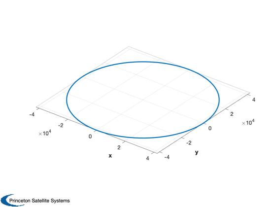
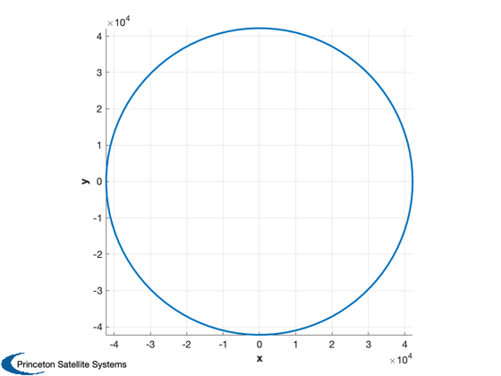
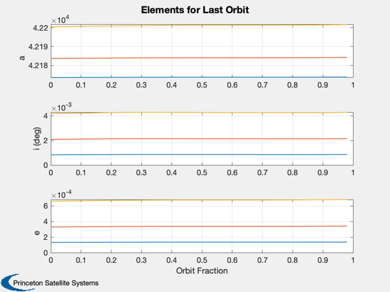
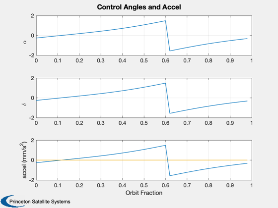
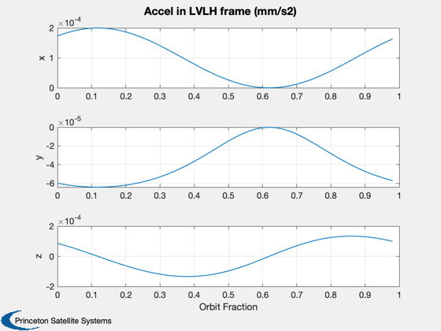
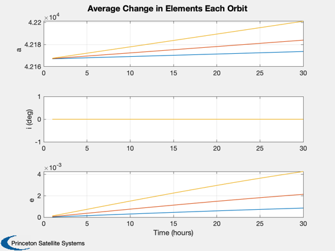
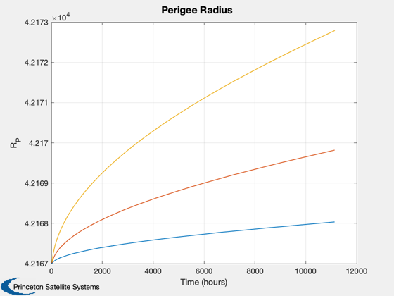
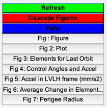

Simulate raising to graveyard orbit from GEO.
This is a low-fidelity model with a specular sail using EarthGuidance and FOrbCart. Integration is with RK45 (variable integration timestep). The simulation is run three times, for three different sail areas. The spacecraft bus is 1730 kg (a Lockheed A2100AX bus). The largest sail modeled can achieve over 5 km SMA change per month. You can also run the sail perfectly sun-pointing for comparison. Plots: (1) Planar view of orbit (2) Elements for the last orbit (3) Control angles (for the last orbit) (4) Average change in elements each orbit (5) Perigree radius (6) Acceleration in LVLH frame (for last orbit)
Since version 7. ------------------------------------------------------------------------- See also Cone, NPlot, Plot2D, TimeLabl, Cross, Dot, RK4, Unit, JD2000, El2RV, RV2El, Eclipse, SunV1, Accel, ConeClockToU, UToConeClock, delta, EarthGuidance -------------------------------------------------------------------------
Contents
%------------------------------------------------------------------------------- % Copyright (c) 2006 Princeton Satellite Systems, Inc. % All rights reserved. %-------------------------------------------------------------------------------
Constants
mu = 398600.44; % Earth cLight = 3e8; % m/s flux = 1367; % W/m2 m2km = 0.001;
Set up the parameters.
Area OR mass can be a vector, not both.
%---------------------------------------- Asail = [40 100 200]; % m2 arealDensity = 0.025; % g/m2 mSC = [1730]; % kg % Number of sim steps and duration %--------------------------------- nOrbits = 30; nPPO = 50; dOrbits = 40; % delta points between 3D plotting % Initial conditions %------------------- SMA = 42167; % 6378+1000; % inc = 0; jD0 = JD2000; % eclipse will be seen for JD2000+90, equinox on 79 % Control method (see EarthGuidance) %----------------------------------- method = 'sma'; % Results % 50 m square sail at 25 g/m2, 1730 kg bus, 3500 km/year with on/off % 50 m square sail and 25 g/m2, 1730 kg bus, 649.018358 km/year with on/30*
Simulation initialization
el0 = [SMA inc 0 0 0 0]; nSim = nOrbits*nPPO; dT = Period(SMA)/nPPO; % Number of separate cases mSail = Asail*arealDensity; % kg mass = mSail + mSC; mSim = length(mass); [r0,v0] = El2RV( el0, [], mu ); % Plotting arrays %---------------- dPlot = PlotArrays('init',{mSim nPPO}); dPlot = PlotArrays('add',dPlot,'sma',SMA); dPlot = PlotArrays('add',dPlot,'nEclipse',0); dPlot = PlotArrays('add',dPlot,'inc',0); dPlot = PlotArrays('add',dPlot,'ecc',0); dPlot = PlotArrays('add',dPlot,'r',0); dPlot = PlotArrays('add',dPlot,'t',0); dPlot = PlotArrays('add',dPlot,'acc',0); dPlot = PlotArrays('add',dPlot,'cone',0); dPlot = PlotArrays('add',dPlot,'clock',0); dPlot = PlotArrays('add',dPlot,'accLVLH',[0;0;0]); dAvg = PlotArrays('init',{mSim nOrbits}); dAvg = PlotArrays('add',dAvg,'sma',SMA); dAvg = PlotArrays('add',dAvg,'inc',0); dAvg = PlotArrays('add',dAvg,'ecc',0); dAvg = PlotArrays('add',dAvg,'t',0); dAvg = PlotArrays('add',dAvg,'apogee',0); dAvg = PlotArrays('add',dAvg,'perigee',0); dAvg = PlotArrays('add',dAvg,'r',0); xPlot = zeros(6,nPPO); % Global for the time interface %------------------------------ global simulationAction simulationAction = ' '; d = struct; d.method = method; [rP, vP] = RVFromKepler( el0 ); Plot3D(rP) hold on
Run the simulation(s)
%---------------------- for j = 1:mSim % Assume specular sail %--------------------- acc0 = 2*Asail(j)*flux/cLight/mass(j)*m2km; x = [r0;v0]; jD = jD0; disp('-----------------------------') disp(['Simulation ' num2str(j) ' of ' num2str(mSim)]) disp('-----------------------------') kS = 1; kO = 1; h = dT; for k = 1:nSim % Local variables %---------------- r = x(1:3); v = x(4:6); % Display the status message %--------------------------- if floor(k/nSim*10) == kS disp(['Sim is ' num2str(kS) '0% finished.']) kS = kS+1; end % Control %-------- % First determine sail unit vector. [uS, rS] = SunV1( jD ); if 1 % use EarthGuidance to compute an optimal angle d.method = method; [q,alphaG,deltaG] = EarthGuidance( 0, [r;v], d, struct('uSun',uS) ); else % switch based on angle between sun projection in orbit plane and r hHat = Unit(Cross(r,v)); sunProj = Cross( hHat, Cross(uS,hHat) ); cosTheta = Unit(sunProj)'*Unit(v); if cosTheta > 0 % receding from sun alphaG = pi/2; % off: pi/2 deltaG = 0; else % approaching sun alphaG = 0; deltaG = 0; end end u = ConeClockToU( alphaG, deltaG, r, v, uS ); % Check for eclipses (not common in GEO) [n, eclipseType] = Eclipse( r, rS*uS ); % Compute the acceleration accel = n*acc0*cos(alphaG); aExt = -accel*u; % Plotting %--------- varNames = {'r' 'nEclipse' 'acc' 'cone' 'clock' 'sma' 'inc' 'ecc'}; el = RV2El( r, v, mu )'; dPlot = PlotArrays('logmulti',dPlot,varNames,{j kO},... {Mag(r) n accel alphaG deltaG el(1) el(2)*180/pi el(5)}); q = QLVLH( r, v ); dPlot = PlotArrays('log',dPlot,'accLVLH',{j kO},QForm(q,aExt)); xPlot(:,kO) = x; % Integrate the trajectory %------------------------- %x = RK4( 'FOrbCart', x, dT, 0, aExt, mu ); [x, h] = RK45( 'FOrbCart', x, h, dT, dT/200, 1e-8, 0, aExt, mu ); jD = jD + dT/86400; if rem(k,nPPO) == 0 % Compute averages over each day kO = 0; iD = floor(k/nPPO); smaLog = PlotArrays('get',dPlot,'sma'); smaAvg = mean(smaLog(j,:)); dAvg = PlotArrays('log',dAvg,'sma',{j iD},smaAvg); eccLog = PlotArrays('get',dPlot,'ecc'); dAvg = PlotArrays('log',dAvg,'ecc',{j iD},mean(eccLog(j,:))); incLog = PlotArrays('get',dPlot,'inc'); dAvg = PlotArrays('log',dAvg,'ecc',{j iD},mean(incLog(j,:))); dAvg = PlotArrays('log',dAvg,'perigee',{j iD},mean(smaLog(j,:).*(1-eccLog(j,:)))); dAvg = PlotArrays('log',dAvg,'apogee',{j iD},mean(smaLog(j,:).*(1+eccLog(j,:)))); dAvg = PlotArrays('log',dAvg,'t',{j iD},dT*k); % Compute a new dT since orbit period will increase dT = Period(smaAvg)/nPPO; if (rem(iD,dOrbits) == 0 && mSim == 1) % add orbit to plot plot3(xPlot(1,:),xPlot(2,:),xPlot(3,:)) end end kO = kO + 1; end end % Finish orbit plot axis equal; view(0,90)
----------------------------- Simulation 1 of 3 ----------------------------- Sim is 10% finished. Sim is 20% finished. Sim is 30% finished. Sim is 40% finished. Sim is 50% finished. Sim is 60% finished. Sim is 70% finished. Sim is 80% finished. Sim is 90% finished. Sim is 100% finished. ----------------------------- Simulation 2 of 3 ----------------------------- Sim is 10% finished. Sim is 20% finished. Sim is 30% finished. Sim is 40% finished. Sim is 50% finished. Sim is 60% finished. Sim is 70% finished. Sim is 80% finished. Sim is 90% finished. Sim is 100% finished. ----------------------------- Simulation 3 of 3 ----------------------------- Sim is 10% finished. Sim is 20% finished. Sim is 30% finished. Sim is 40% finished. Sim is 50% finished. Sim is 60% finished. Sim is 70% finished. Sim is 80% finished. Sim is 90% finished. Sim is 100% finished.
Plot the results
%----------------- [t, tL] = TimeLabl( (0:(nPPO-1))*dT ); mET = cumsum(dAvg.t.data')'; [mT, mL] = TimeLabl(mET); tPlot = [(0:(nPPO-1))/nPPO]; tL = 'Orbit Fraction'; Plot2D(tPlot,[dPlot.sma.data;dPlot.inc.data;dPlot.ecc.data],... tL,{'a' 'i (deg)' 'e'},'Elements for Last Orbit','lin',... {[1:mSim],[1:mSim]+mSim,[1:mSim]+2*mSim}); %Plot2D(t,aPlot,tL,'SMA (km)', 'SemiMajor Axis Change with Sail Length (m)') %legend(num2str(sqrt(Asail)',3)) hF = Plot2D(tPlot,[dPlot.cone.data;dPlot.clock.data;dPlot.acc.data*1e6],... tL,{'\alpha' '\delta' 'accel (mm/s^2)'},... ['Control Angles and Accel'],'lin',{1,2,[1:mSim]+2}); if mSim == 1 nPlot = floor(squeeze(dPlot.nEclipse.data)'); if nPlot(1) == 1 colors = [1 1 1; 0.9 0.9 0.9]; else colors = [0.9 0.9 0.9; 1 1 1]; end AddFillToPlots( t, nPlot, hF, colors ); end Plot2D(tPlot,squeeze(dPlot.accLVLH.data(:,1,:))*1e6,tL,{'x','y','z'},'Accel in LVLH frame (mm/s2)') tPlot = [1:nOrbits]; tL = 'Orbits'; Plot2D(tPlot,[dAvg.sma.data;dAvg.inc.data;dAvg.ecc.data],... mL,{'a' 'i (deg)' 'e'},... 'Average Change in Elements Each Orbit','lin',... {[1:mSim],[1:mSim]+mSim,[1:mSim]+2*mSim}); Plot2D(mT,dAvg.perigee.data,mL,{'R_P'},'Perigee Radius'); Figui;     
Report
disp('-----------------------------') fprintf(1,'Mission length: %d orbits\n',nOrbits); fprintf(1,'Sail average density: %d g/m2\n',arealDensity*1000); fprintf(1,'Mass of bus moved: %d kg\n',mSC); for k = 1:length(Asail) disp('--------') fprintf(1,'Sail length: %g m\n',sqrt(Asail(k))); fprintf(1,'Change in perigee: %g km\n',dAvg.perigee.data(k,end)-dAvg.perigee.data(k,1)); fprintf(1,'%3.1f m square sail at %d g/m2, %d kg bus, %3.1f km/%d orbits\n',... sqrt(Asail(k)),arealDensity*1000,mSC,dAvg.perigee.data(k,end)-dAvg.perigee.data(k,1),nOrbits); end %-------------------------------------- % PSS internal file version information %--------------------------------------
----------------------------- Mission length: 30 orbits Sail average density: 25 g/m2 Mass of bus moved: 1730 kg -------- Sail length: 6.32456 m Change in perigee: 1.02879 km 6.3 m square sail at 25 g/m2, 1730 kg bus, 1.0 km/30 orbits -------- Sail length: 10 m Change in perigee: 2.80512 km 10.0 m square sail at 25 g/m2, 1730 kg bus, 2.8 km/30 orbits -------- Sail length: 14.1421 m Change in perigee: 5.75852 km 14.1 m square sail at 25 g/m2, 1730 kg bus, 5.8 km/30 orbits